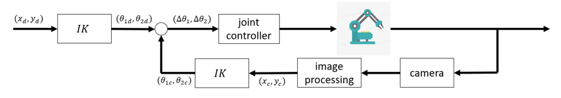
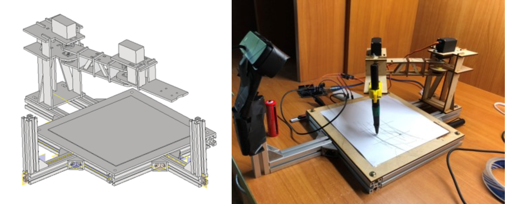
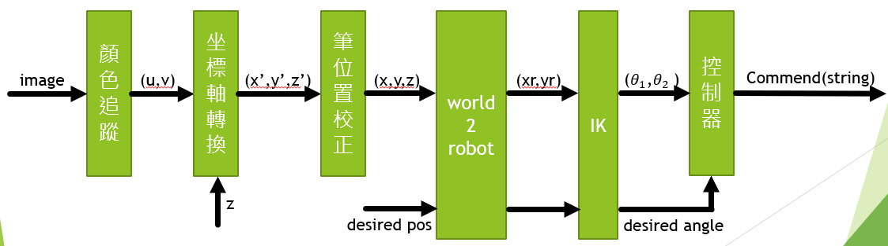
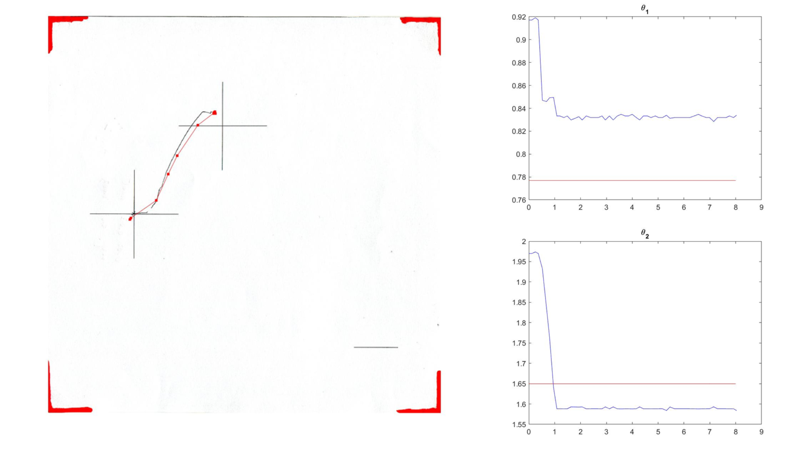
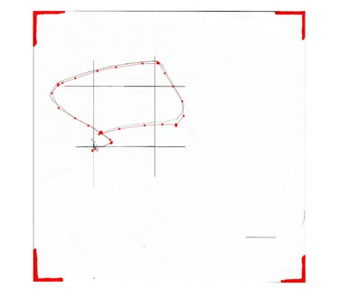

本專題利用電腦視覺與機器手臂做結合，嘗試利用電腦視覺作為迴授工具已達成閉迴路的控制。
控制流程圖
本專題將傳統上利用編碼器(encoder)各軸的位置值取代為利用視覺系統以及Inverse Kinematics做計算
本專題設計了實驗裝置如附圖，其中包含一隻RR機器手臂、繪圖平台、相機支架。其中RR機器手臂所使用的是連續旋轉的MG996R servo motor， 並利用Arduino控制馬達。為降低Arduino的用算負擔，將影像處理與Inverse kinematics等較複雜的計算由電腦計算， 再利用Serial port把給指令傳輸給Arduino。
寫字機器人(左圖為CAD檔，右圖為實際成品)
本專題利用影像辨識筆上的marker已得到機器手臂末端點的位置，接著再利用Inverse Kinematics計算機器手臂各軸的角度， 最後再利用PID與期望的軌跡計算控制的控制伺服馬達的速度值。同時為方便測試以及使用，本文利用Qt製作簡易UI提供使用者秤方便使用的系統。
軟體架構
繪製斜直線由左下的十字移動到右上的十字
實驗結果
左圖為實際繪製的結果，紅點為相機所觀測到機器手臂的末端點；右圖為軸的角度值。
繪製方形
實驗結果
黑線為實際繪製的結果，紅點為相機所觀測到機器手臂的末端點
由上方的實驗結果可以觀察到，各個筆跡與相機的觀測結果可以發現本實驗所採用的視覺系統是能有效的觀測到機器手臂末端點的位置， 但由筆跡與預期的軌跡相比較會發現差異較大，應該是因為視覺系統的速度相較於傳統的編碼器(encoder)慢，故無法較快的反應， 因此造成較大的overshoot，同時因為機器手臂設計存在較大的阻力造成機器手臂無法做出較為細微修正。